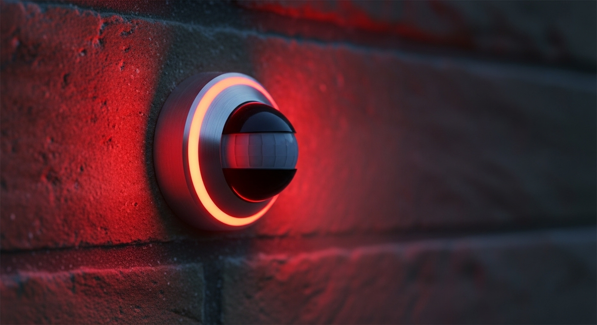

سیستم امنیت هوشمند ویلا
Drone Surveillance • IoT Sensors • Automated Security
سیستم امنیت هوشمند ویلا با پهپاد و IoT
مقاله پروژه: نگهبان هوشمند ویلا، ترکیبی از پهپاد و اینترنت اشیاء
۱. کشف مشکل: محدودیتهای نظارت انسانی و سنتی
تامین امنیت ویلاها و املاک بزرگ همواره با چالشهایی مانند هزینههای بالای استخدام نگهبان، خطای انسانی، و محدودیت پوششدهی کامل محیط همراه بوده است. سیستمهای امنیتی سنتی نیز اغلب واکنشی هستند و قابلیت پیشگیری یا شناسایی هوشمند تهدیدات را ندارند.
۲. راه حل: سیستم یکپارچه نظارت خودکار
این پروژه یک راهکار امنیتی جامع ارائه میدهد که با ترکیب پهپادهای گشتزن، سنسورهای هوشمند اینترنت اشیاء (IoT) و یک پلتفرم کنترل مرکزی، نظارت ۲۴ ساعته و کاملاً خودکار را ممکن میسازد. این سیستم نه تنها امنیت را افزایش میدهد، بلکه هزینههای عملیاتی را نیز به شکل چشمگیری کاهش میدهد.
۳. ویژگیهای کلیدی و مراحل پیادهسازی
- پهپاد نگهبان خودکار: پهپادها به عنوان نگهبانان هوایی عمل میکنند. آنها میتوانند به صورت زمانبندیشده مسیرهای مشخصی را گشتزنی کنند یا در صورت دریافت هشدار از سنسورها، به سرعت به منطقه مورد نظر اعزام شوند و تصاویر زنده ارسال کنند. پس از هر ماموریت، پهپاد به صورت خودکار به ایستگاه شارژ خود بازمیگردد.
- شبکه یکپارچه سنسورهای IoT: سنسورهای حرکتی، لرزشی، و سنسورهای باز شدن در و پنجره در سراسر ملک نصب میشوند. این سنسورها به محض تشخیص فعالیت مشکوک، سیستم مرکزی را مطلع کرده و سناریوهای امنیتی تعریفشده (مانند فعال کردن آژیر یا اعزام پهپاد) را فعال میکنند.
- پلتفرم کنترل و نظارت مرکزی: یک اپلیکیشن موبایل و وب به مالک اجازه میدهد تا در هر زمان و از هر مکان، به تصاویر زنده دوربینها و پهپاد دسترسی داشته باشد، وضعیت سنسورها را بررسی کند، و هشدارهای فوری را روی گوشی خود دریافت نماید. این پلتفرم همچنین گزارشهای دقیقی از تمام فعالیتهای ثبتشده ارائه میدهد.
گالری تصاویر پروژه
شبکه سنسورهای هوشمند IoT

پلتفرم کنترل و نظارت مرکزی
جزئیات فنی پیادهسازی
تکنولوژیهای استفاده شده
- • Drone Programming: کنترل و برنامهریزی پهپاد
- • IoT Sensors: سنسورهای حرکتی و لرزشی
- • Python: برنامهنویسی سیستم مرکزی
- • OpenCV: پردازش تصاویر دوربین
- • Mobile App: اپلیکیشن کنترل از راه دور
ویژگیهای کلیدی
- • پهپاد نگهبان خودکار
- • شبکه سنسورهای IoT
- • پلتفرم کنترل مرکزی
- • هشدارهای فوری
- • نظارت ۲۴ ساعته
نتایج و تأثیرات
100%
پوشش امنیتی محوطه
80%
کاهش هزینههای نگهبانی
95%
دقت تشخیص تهدیدات